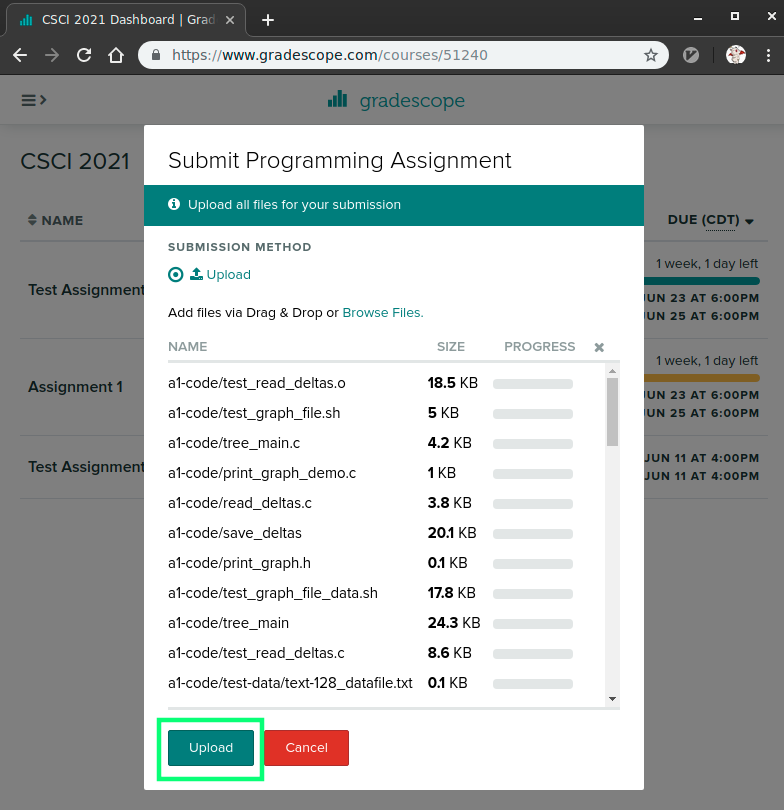
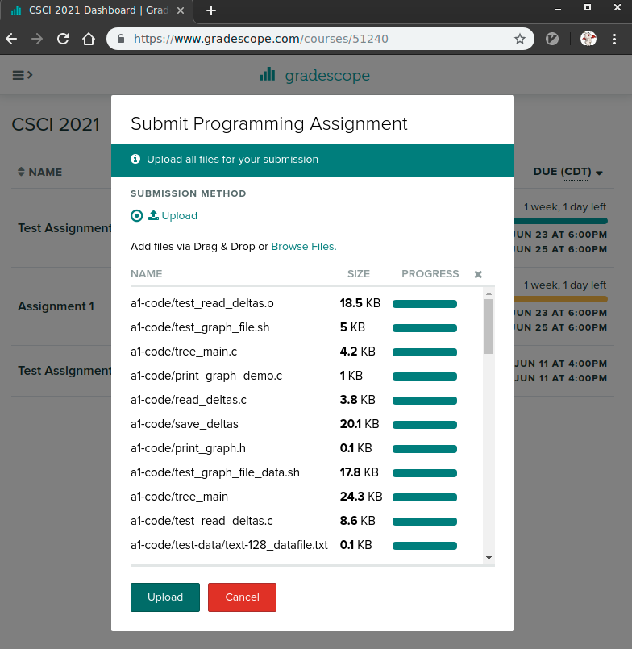
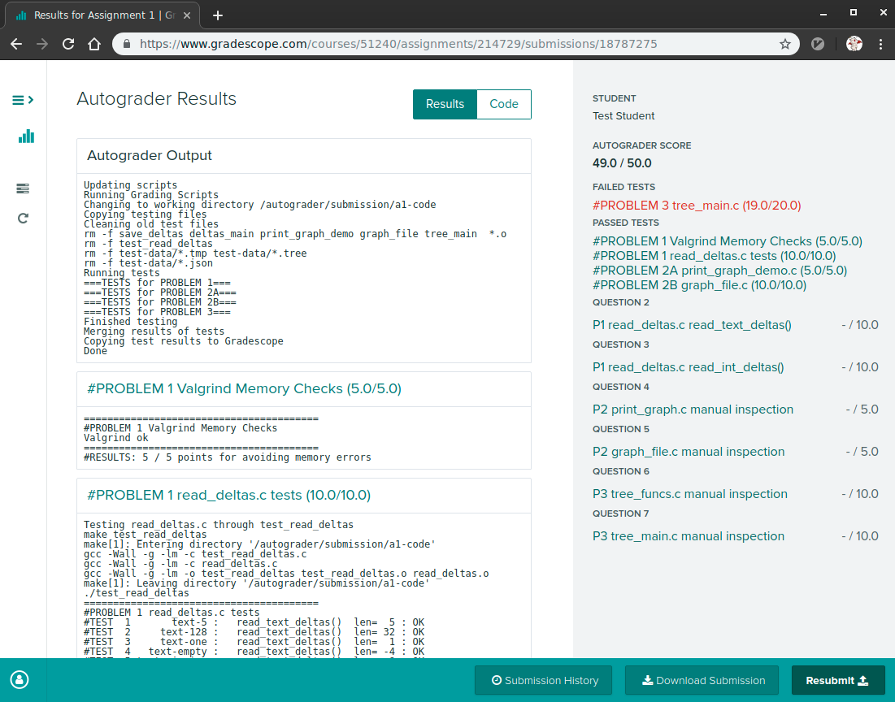

CSCI 2021 Project 1: C Programming
- Due: 11:59pm Wed 2/10/2021
- Approximately 4.0% of total grade
- Submit to Gradescope (Submission will open soon…)
- Projects are individual work: no collaboration with other students is allowed. Seek help from course staff if you get stuck for too long.
CODE DISTRIBUTION: p1-code.zip
VIDEO OVERVIEW: https://youtu.be/VJ_0VBFlydg
CHANGELOG:
- Mon Feb 1 08:48:00 AM CST 2021
- Post 80 reported a minor bug in the
testyscript which caused tests to run improperly on the Windows Subsystem for Linux. The post outlined the in-place modification totestyto fix this. Alternatively, students can download the updated copy oftestyor re-download thep1-code.zipfile which has the fix.
1 Introduction
Basic application programming in C is an essential step downward towards the lower levels of computing. This project explores fundamental aspects of getting work done in C:
- Dynamic memory management with
malloc()/free() - Reading data from files in text format
- Displaying information to the screen
- Reading commands from users in interactive programs
- Building data structures with C
structs
The assignment is divided into several problems utilizing many of the above techniques.
- Problem 1 is a warm up with some basic string and printing routines to implement
- Problem 2 builds on the previous routines to complete a banner letter printing program
- Problem 3 builds a simple binary tree application
Problems 1 and 2 build on each other and are somewhat easier than Problem 3. Strong consider going in order on the Project to take advantage of the structure in early problems before reaching the more open-ended final problem.
1.1 Grading Criteria
Credit for this assignment will be given based on two categories.
- Manual Inspection Criteria (~50%): Each problem has a checklist of things that graders will look for. The checklist is in the spec and often contains hints on what to do. Make sure you have a look at these.
- Automated Testing (~50%): Each problem has tests associated with it along with instructions on how to run those tests from the command line. Tests require that code compiles and runs according to the descriptions given so make sure you verify that these work.
1.2 Getting Started
Take the following steps to get started
- Download the code associated with the project linked at the top of the spec. Unzip it and examine some of the provided code.
- Examine the overview of the files provided listed in the Download and Setup section. This gives brief descriptions of files that already exist and those that you must create.
- Pick a problem and read. There is a lot of information and many examples provided for each problem. Reading this will help you write the correct code earlier rather than later.
- Ask questions: if its not clear how to proceed, put up a Piazza post or visit an office hour.
- Get coding: don't wait to start for too long as this will greatly increase your stress level an potentially result in late submissions.
- Familiarize yourself with the late submission policy for assignments so you are not caught off guard. No submissions will be accepted more than 48 hours after the deadline.
1.3 Makefile
A Makefile is provided as part of this project. Building programs in
C is a bit tedious and most folks use build systems of which make
is the oldest. The instructions and dependencies to create programs
are written in a Makefile which is then interpreted by the make
program which will run gcc and other commands to create programs.
Use this Makefile by issuing commands like make prob1
> make prob2 # build problem 2 main program gcc -Wall -Wno-comment -Werror -g -c banlet_main.c gcc -Wall -Wno-comment -Werror -g -c banlet_funcs.c gcc -Wall -Wno-comment -Werror -g -c banlet_font_standard.c gcc -Wall -Wno-comment -Werror -g -o banlet_main banlet_main.o banlet_funcs.o font_standard.o > make clean # remove all programs/binary object files rm -f banlet_main test_banlet_funcs1 test_banlet_funcs2 hashset_main *.o > make prob3 # build problem 3 main program gcc -Wall -g -lm -c hashset_main.c gcc -Wall -g -lm -c hashset_funcs.c gcc -Wall -g -lm -o hashset_main hashset_main.o hashset_funcs.o > make clean # remove all programs/binary object files rm -f banlet_main banlet_demo test_banlet_funcs1 test_banlet_funcs2 hashset_main *.o > make # build all programs/objects for the assignment gcc -Wall -Wno-comment -Werror -g -c banlet_main.c gcc -Wall -Wno-comment -Werror -g -c banlet_funcs.c gcc -Wall -Wno-comment -Werror -g -c banlet_font_standard.c gcc -Wall -Wno-comment -Werror -g -o banlet_main banlet_main.o banlet_funcs.o font_standard.o gcc -Wall -Wno-comment -Werror -g -o test_banlet_funcs1 test_banlet_funcs1.c banlet_funcs.o font_standard.o gcc -Wall -Wno-comment -Werror -g -o test_banlet_funcs2 test_banlet_funcs2.c banlet_funcs.o font_standard.o gcc -Wall -Wno-comment -Werror -g -c hashset_main.c gcc -Wall -Wno-comment -Werror -g -c hashset_funcs.c gcc -Wall -Wno-comment -Werror -g -o hashset_main hashset_main.o hashset_funcs.o
You are not required to understand all that is the Makefile (yet)
but it is a very useful tool and may be worth your while to inspect.
Running make help will provide a summary of the build/test commands
present in the Makefile.
> make help Typical usage is: > make # build all programs > make clean # remove all compiled items > make zip # create a zip file for submission > make prob1 # built targets associated with problem 1 > make test # run all tests > make test-prob2 # run test for problem 2 > make test-prob2 testnum=5 # run problem 2 test #5 only
1.4 Automated Tests
Automated tests are included with the code distribution. These tests are known to work on lab machines only but in most cases they should run identically in Linux environments such as the Windows subsystem for Linux or a virtual machine.
The provided Makefile allows automated tests to be run via calls
like make test-prob1 to test Problem 1 and make test-prob2 to test
Problem 2. See the transcript below.
> make test-prob1 # run tests for problem 1, compiles required code first gcc -Wall -Wno-comment -Werror -g -c banlet_funcs.c gcc -Wall -Wno-comment -Werror -g -c banlet_font_standard.c gcc -Wall -Wno-comment -Werror -g -o test_banlet_funcs1 test_banlet_funcs1.c banlet_funcs.o font_standard.o ./testy test_prob1.org ============================================================ == test_prob1.org : Problem 1 First 5 Functions in banlet_funcs.c == Running 15 / 15 tests 1) string_replace_char_1 : ok 2) string_replace_char_2 : ok 3) string_replace_char_3 : ok 4) string_replace_char_4 : ok 5) count_linebreaks_1 : ok 6) count_linebreaks_2 : ok 7) count_linebreaks_3 : ok 8) find_linebreaks_1 : ok 9) find_linebreaks_2 : ok 10) find_linebreaks_3 : ok 11) find_linebreaks_4 : ok 12) print_fontified_1 : ok 13) print_fontified_2 : ok 14) print_fontified_3 : ok 15) print_fontified_4 : ok ============================================================ RESULTS: 15 / 15 tests passed > make test-prob2 # run tests for problem 2 gcc -Wall -Wno-comment -Werror -g -c banlet_funcs.c gcc -Wall -Wno-comment -Werror -g -c banlet_font_standard.c gcc -Wall -Wno-comment -Werror -g -o test_banlet_funcs2 test_banlet_funcs2.c banlet_funcs.o font_standard.o gcc -Wall -Wno-comment -Werror -g -c banlet_main.c gcc -Wall -Wno-comment -Werror -g -o banlet_main banlet_main.o banlet_funcs.o font_standard.o ./testy test_prob2.org ============================================================ == test_prob2.org : Problem 2 Banlet Linebreaks, Fonts, main() == Running 15 / 15 tests 1) print_fontified_linebreak_1 : ok 2) print_fontified_linebreak_2 : ok 3) print_fontified_linebreak_3 : ok 4) load_font_1 : ok 5) load_font_2 : ok 6) load_font_3 : ok 7) load_font_4 : ok 8) banlet_main hello world : ok 9) banlet_main standard hello world : ok 10) banlet_main mini hello world : ok 11) banlet_main banner hello world : ok 12) banlet_main multiline : ok 13) banlet_main allcaps bass : ok 14) banlet_main oo.txt : ok 15) banlet_main mini oo.txt : ok ============================================================ RESULTS: 15 / 15 tests passed > make test # run tests for all problems ...
Each problem describes specifically how tests can be run and how credit will be assigned.
Note that one can run a single test with the following make
invocation which sets testnum.
> make test-prob2 testnum=5
This is useful when debugging to limit the output and time it takes to check program results.
2 Download Code and Setup
Download the code pack linked at the top of the page. Unzip this which will create a project folder. Create new files in this folder. Ultimately you will re-zip this folder to submit it.
| File | State | Notes |
|---|---|---|
Makefile |
Provided | Build file to compile all programs |
banlet_funcs.c |
EDIT | Problem 1/2 functions to write |
banlet_demo.c |
Provided | Problem 1/2 demo code to show some structs |
banlet_main.c |
Provided | Problem 2 main function, do not edit |
banlet.h |
Provided | Problem 1/2 header file |
banlet_font_standard.c |
Provided | Problem 1/2 font source file |
test_banlet_funcs1.c |
Testing | Testing file for Problem 1 |
test_banlet_funcs2.c |
Testing | Testing file for Problem 2 |
data/font_standard.txt |
Data | Font text files for Problem 2 |
data/font_banner.txt |
Data | |
data/font_mini.txt |
Data | |
data/font_capsonly.txt |
Data | |
data/bass.txt |
Data | Text files for Problem 1/2 |
data/oo.txt |
Data | |
hashset.h |
Provided | Problem 3 header file |
hashset_funcs.c |
CREATE | Problem 3 functions to write |
hashset_main.c |
CREATE | Problem 3 main function to write |
data/hashset_demo.script |
Data | Problem 3 sample input scripts to main program |
data/alphabet.script |
Data | |
data/rm.hashset |
Data | Problem 3 sample tree set save files |
data/alphabet.hashset |
Data | |
data/alphabet_expand.hashset |
Data | |
| TESTING | ||
testy |
Testing | Test running script |
test-results/ |
Testing | Directory in which temporary testing files are written |
test_banlet1.org |
Testing | Problem 1 tests |
test_banlet2.org |
Testing | Problem 2 tests |
test_hashset.org |
Testing | Problem 3 tests |
3 Problem 1: Banlet Support
3.1 Overview
Problems 1 and 2 recreate a simplified version of the figlet program
program that is available on many Unix systems. The problems construct
a similar program called Banlet which prints messages as "banner
letters" which are larger and more striking than standard terminal
fonts. As an example, here what banlet_main does in practice:
> ./banlet_main 'Hi there!' # print a simple "fontified" message"
_ _ _ _ _ _
| | | |(_) | |_ | |__ ___ _ __ ___ | |
| |_| || | | __|| '_ \ / _ \| '__| / _ \| |
| _ || | | |_ | | | || __/| | | __/|_|
|_| |_||_| \__||_| |_| \___||_| \___|(_)
> ./banlet_main data/font_banner.txt $'How do\nyou do?' # print a multiline message in a different font
# #
# # #### # # ##### ####
# # # # # # # # # #
####### # # # # # # # #
# # # # # ## # # # # #
# # # # ## ## # # # #
# # #### # # ##### ####
#####
# # #### # # ##### #### # #
# # # # # # # # # # #
# # # # # # # # # ###
# # # # # # # # # #
# # # # # # # # #
# #### #### ##### #### #
> ./banlet_main data/font_mini.txt "$(cat data/testing.txt)" # select a different font, message from a file
___
| _ __|_o._ _ _ _.._ _ ._ | ._ ._ _ _ _|_|_ _ ._ ._ _ _ _ ._ _ _
| (/__> |_|| |(_| (_(_|| | (_)| ||\/ |_)| (_)\/(/_ |_| |(/_ |_)| (/__>(/_| |(_(/_
_| / | |
_
_ _|_ |_ _ _ ._ _ _|_ _|_|_ _ o._ _.|_ _ _ ._ _ _
(_) | |_)|_|(_|_>o | |(_) |_ |_| |(/_|| (_||_)_>(/_| |(_(/_o
_| /
_ _
__ |_ _| _ _ _ ._ | \o o| __|_._ _.
|_(_|_>(_|(/_| |_/| ||<_> |_| (_|
_| _|
Problem 1 lays out a number of utility functions that operate on strings which gradually build towards the full functionality required.
3.2 Outline of banlet_funcs.c
The file banlet_funcs.c will contain most of the support functions
for the Banlet program. An outline of these functions are presented
below. Note that each function has the Problem # to which it belongs.
// banlet_funcs.c: support functions for the banlet_main program.
void string_replace_char(char *str, char old, char new);
// PROBLEM 1: Replace instances of character 'old' with 'new' in the
// string 'str'. May use the strlen() library function to determine
// string length or directly look for a '\0' null termination
// character to end the string.
//
// EXAMPLES:
// char s1[]="A A B B A"; string_replace_char(s1, 'A', 'X'); // s1 is "X X B B X"
// char s2[]="A A B B A"; string_replace_char(s2, 'B', 'Y'); // s2 is "A A Y Y A"
// char s3[]="A A B B A"; string_replace_char(s3, ' ', '-'); // s3 is "A-A-B-B-A"
int count_linebreaks(char *msg);
// PROBLEM 1: Counts the number of newline characters '\n' in the
// string 'msg'; return this number +1 as the end of lines will always
// be a line break. May use the strlen() library function to determine
// string length or directly look for a '\0' null termination
// character to end the string.
//
// EXAMPLES:
// count_linebreaks("Hi") -> 1
// count_linebreaks("Hi There") -> 1
// count_linebreaks("Hi\nThere") -> 2
// count_linebreaks("O\nM\nG") -> 3
int *find_linebreaks(char *msg, int *nbreaks);
// PROBLEM 1: Counts the linebreaks (newline '\n' chars and end of
// string) and returns an array of integers with the position for each
// linebreak in string 'msg'. Uses the count_linebreaks()
// function. The 'nbreaks' parameter is an OUTPUT integer that should
// be set to the number of breaks in 'msg' using the C dereference
// operator (*).
//
// EXAMPLES:
// int nbreaks = -1;
// int *breaks = find_linebreaks("Hello\nWorld", &nbreaks);
// // index in string: 012345 67890
// // nbreaks is now 2
// // breask is now [5, 11]
void print_fontified(char *msg, int length, font_t *font);
// PROBLEM 1: Prints string 'msg' using 'font'. Only prints characters
// 0 to 'length-1'. Iterates over each row in font->height and then
// scans across the charactes in 'msg' printing each "row" of the
// character. On reaching index 'length', prints a newline and then
// scans across 'msg' again printing characters from the next row.
// Each msg[i] character is used to as the index into fonts->glyphs[]
// to access the "glyph" that will be printed.
//
// NOTE: This function does NOT handle embedded newline '\n'
// characters. It is intended to be called repeatedly on each line in
// multiline text with '\n' characters found using the
// 'find_linebreaks()' function.
//
// EXAMPLE:
//
// print_fontified("Hello!", 6, &font_standard);
// // Prints the following on standard output:
// _ _ _ _ _
// | | | | ___ | || | ___ | |
// | |_| | / _ \| || | / _ \ | |
// | _ || __/| || || (_) ||_|
// |_| |_| \___||_||_| \___/ (_)
void print_fontified_linebreaks(char *msg, font_t *font);
// PROBLEM 2: Uses print_fontified() with find_linebreaks() to
// correctly print 'msg' with 'font' even if there are linebreaks in
// 'msg'. Uses find_linebreaks() to find the end of each line in
// 'msg' and then iterates over lines printing each. Uses pointer
// arithmetic to pass the starting position of each line into calls of
// print_fontified(). Frees memory allocated before returning.
//
// EXAMPLE:
// print_fontified_linebreaks("apple\nB@N@N@\nCarr0^", &font_standard);
// // Shows the following on standard output:
// _
// __ _ _ __ _ __ | | ___
// / _` || '_ \ | '_ \ | | / _ \
// | (_| || |_) || |_) || || __/
// \__,_|| .__/ | .__/ |_| \___|
// |_| |_|
// ____ ____ _ _ ____ _ _ ____
// | __ ) / __ \ | \ | | / __ \ | \ | | / __ \
// | _ \ / / _` || \| | / / _` || \| | / / _` |
// | |_) || | (_| || |\ || | (_| || |\ || | (_| |
// |____/ \ \__,_||_| \_| \ \__,_||_| \_| \ \__,_|
// \____/ \____/ \____/
// ____ ___ /\
// / ___| __ _ _ __ _ __ / _ \ |/\|
// | | / _` || '__|| '__|| | | |
// | |___ | (_| || | | | | |_| |
// \____| \__,_||_| |_| \___/
void glyph_init(glyph_t *glyph, int codepoint);
// PROVIDED: Initializes a glyph to mostly X's except for its
// codepoint on the first line.
font_t *font_load(char *filename);
// PROBLEM 2: Loads a banner font from 'filename'. The format of text
// file is documented more thoroughly in the project specification but
// is generally comprised of a first line that indicate the height of
// each glyph in the font followed by a sequence of each glyph
// starting with its codepoint (ASCII index) and a grid of characters
// in it. To make parsing easier, the @ character is used to represent
// blank spaces in glyph shapes.
//
// EXAMPLE:
// height: 4
// 42
// @@@
// \|/
// /|\
// @@@
// 43
// @@@
// _|_
// @|@
// @@@
//
// The two characters above are the codepoint 42 '*' and codepoint 43
// '+' with the @ symbols eventually being replaced by spaces during
// loading.
//
// If 'filename' cannot be opened for reading, returns NULL.
//
// Memory allocation happens in two steps: (1) allocates memory for a
// font_t struct then (2) allocates memory for an array of glyph_t
// structs of length NUM_ASCII_GLYPHS (a constant defined in
// banlet.h). Sets the font->glyphs field to be the allocated array of
// glyphs. Reads the font->height field from teh first line of the
// file. Iterates over each element of the glyphs array and calls the
// glyph_init() function on it to populate it with default data. Then
// proceeds to read glyphs from the file. Glyphs are read by reading
// the integer codepoint first which determins which element of the
// glyph array to read into. Then a loop over the height of the font
// is used to read each row of the glyph into the
// glyph[codepoint]->data[row]; fscanf() with '%s' specifier is used
// for this. Finally, the string_replace_char() function is used to
// replace all '@' characters with ' ' (space) characters in the glyph
// data. Sets the width of each glyph using the strlen() function on
// any balid row of the glyph data.
//
// Glyphs are read from 'filename' until an attempt to read a glyph's
// codepoint with fscanf() returns EOF (end of file). This causes the
// routine to return the allocated font_t data for use elsewhere.
void font_free(font_t *font);
// PROBLEM 2: Frees the memory associated with 'font'. First frees
// the glyph array, then frees the font itself. Hint: this funciton
// should be 2 lines long.
3.3 Editing and Testing
The project code contains a skeleton version of banlet_funcs.c which
you should fill in with definitions. With this skeleton version, you
can immediately start testing your code by typing make test-prob1.
Without changes, you will get failures for all tests as in
> make test-prob1 ./testy test_prob1.org ============================================================ == test_prob1.org : Problem 1 First 5 Functions in banlet_funcs.c == Running 15 / 15 tests 1) string_replace_char_1 : FAIL -> results in file 'test-results/prob1-01-result.tmp' 2) string_replace_char_2 : FAIL -> results in file 'test-results/prob1-02-result.tmp' 3) string_replace_char_3 : FAIL -> results in file 'test-results/prob1-03-result.tmp' 4) string_replace_char_4 : FAIL -> results in file 'test-results/prob1-04-result.tmp' ... 15) print_fontified_4 : FAIL -> results in file 'test-results/prob1-15-result.tmp' ============================================================ RESULTS: 0 / 15 tests passed
However, the ability to run tests on your code an see progress is extremely important. Your first goal when starting a new project should be to see some results or running the program which is much easier if some benevolent dictator has provided a bunch of tests.
Keep in mind that as you fail test, you can see the results files in
any text editor or in the terminal. The cat command is helpful for
this:
> cat test-results/prob1-01-result.tmp
(TEST 1) string_replace_char_1
COMMENTS:
program: ./test_banlet_funcs1 string_replace_char_1
Failure messages:
- FAILURE: Output Mismatch at lines marked
--- Side by Side Differences ---
- Expect output in: test-results/raw/prob1-01-expect.tmp
- Actual output in: test-results/raw/prob1-01-actual.tmp
- Differing lines have a character like '|' in the middle\n
==== EXPECT ==== ==== ACTUAL ====
{ {
// Tests replacing characters in a string // Tests replacing characters in a string
char string[]="A A B B A"; char string[]="A A B B A";
string_replace_char(string, 'A', 'X'); string_replace_char(string, 'A', 'X');
printf("result: '%s'\n", string); printf("result: '%s'\n", string);
} }
result: 'X X B B X' | result: 'A A B B A'
--- Line Differences ---
EXPECT: 7) result: 'X X B B X'
ACTUAL: 7) result: 'A A B B A'
--- Valgrind Log from: test-results/raw/prob1-01-valgrd.tmp ---
==29883== Memcheck, a memory error detector
==29883== Copyright (C) 2002-2017, and GNU GPL'd, by Julian Seward et al.
==29883== Using Valgrind-3.16.1 and LibVEX; rerun with -h for copyright info
==29883== Command: ./test_banlet_funcs1 string_replace_char_1
==29883== Parent PID: 29882
==29883==
==29883==
==29883== HEAP SUMMARY:
==29883== in use at exit: 0 bytes in 0 blocks
==29883== total heap usage: 0 allocs, 0 frees, 0 bytes allocated
==29883==
==29883== All heap blocks were freed -- no leaks are possible
==29883==
==29883== For lists of detected and suppressed errors, rerun with: -s
==29883== ERROR SUMMARY: 0 errors from 0 contexts (suppressed: 0 from 0)
You can also use the invocation
> make test-prob1 testnum=5
to run a single test and see its results.
3.4 String Utility Functions
The first 3 functions to implement in banlet_funcs.c are string
utility functions that will be used later. As covered in lecture, C
uses raw arrays of characters as its string type. Often these are
passed as a pointer to character data, thus the prototypes that
involve char * as in
void string_replace_char(char *str, char old, char new)
Keep the following in mind.
- You'll need to iterate over the characters in the string. Since
stris a pointer, one can use the indexing syntaxstr[i]to access individual characters in it. This can also be used to assign a new character as instr[i] = 'A';. strdoes not carry its length with it so there is nostr.lengthorlength(str)available andsizeof(str)WILL NOT WORK to determine the length of the string.- Since one definitely needs to iterate over all characters in
str, use one of the following two mechanisms to find its endstrlen(str): this handy function from the C string library gives returns the length of strings only- The
\0character: all standard strings are to be terminated with a null\0character; one can check ifstr[i] == '\0'while iterating to find the end of the string. This is the technique that is used by library functions likeprintf()to find the end of strings.
- Make sure to use an equality check when comparing elements, that is
the
x == yoperator in C, NOT the assignment operator=.
find_linebreaks()
Consider the prototype for find_linebreaks() which has some
interesting features:
int *find_linebreaks(char *msg, int *nbreaks)
Importantly, this function must return 2 things determined from
parameter msg
- An array of integers indicating the positions in
msgwhere\n(newline) characters appear along with the end of the string. This is the return value for the function which must be amalloc()'d array. Do NOTfree()the array of integers youmalloc()infind_linebreaks(): it will be freed by the calling function The length of the returned array must also be returned. C does not support multiple returns per se, but pointers more than make up for this. The parameter
nbreaksis meant to be SET byfind_linebreaks()as indicated in the function documentation. A caller will provide the address of an integer for the function to setint nbreaks = -1; int *breaks = find_linebreaks("Hello\nWorld", &nbreaks); // index in string: 012345 67890 // nbreaks is now 2 // breask is now [5, 11]
3.5 Print Fontified
Glyphs and Fonts
The function print_fontified() is used to print a line of text in a
"font" as defined by the project. Normally fonts have interesting
geometric curves and drawing instructions embedded in them. Most
standard terminals don't support printing such things but do support
printing character data. Thus "fonts" in Banlet are just a grid of
text that is to be printed in when displaying a single character. For
example, when printing a fontified version of "A", the following
glyph is used in builtin font for Banlet.
012345678 0 / \ 1 / _ \ 2 / ___ \ 3/_/ \_\ 4
Basic Algorithm for Fontified Printing
This presents some interesting challenges when printing sequences of
such glyphs as one must typically print across rows of text before
moving the to the next line. So, to print the string "CAT", one would
print the first row of each glyph, then the second, then the 3rd, and
so on. As an example, here is "CAT" built incrementally. The @
symbol is used to denote where printing finishes at each step
ROW 0, PRINT 0th CHAR 'C' ____@ ROW 0, PRINT 1th CHAR 'A' ____ _ @ ROW 0, PRINT 2th CHAR 'T' ____ _ _____@ ROW 0 DONE, PRINT \n ____ _ _____ @ ROW 1, PRINT 0th CHAR 'C' ____ _ _____ / ___|@ ROW 1, PRINT 1th CHAR 'A' ____ _ _____ / ___| / \ @ ROW 1, PRINT 2th CHAR 'T' ____ _ _____ / ___| / \ |_ _|@ ROW 1 DONE, PRINT \n ____ _ _____ / ___| / \ |_ _| @ AFTER PRINTING 2th ROW ALL CHARS ____ _ _____ / ___| / \ |_ _| | | / _ \ | | @ AFTER PRINTING 3th ROW ALL CHARS ____ _ _____ / ___| / \ |_ _| | | / _ \ | | | |___ / ___ \ | | @ AFTER COMPLETING ALL ROWS / CHARS ____ _ _____ / ___| / \ |_ _| | | / _ \ | | | |___ / ___ \ | | \____|/_/ \_\ |_| @
Implementing this basic printing algorithm is the purpose of the
print_fontified() function.
Font and Glyph C Types
The font_t and glyph_t data types are defined in the banlet.h
header file and are as follows.
1: #define MAX_HEIGHT 10 // max height in chars for glyphs 2: #define MAX_WIDTH 20 // max width in chars for glyphs 3: #define NUM_ASCII_GLYPHS 128 // number of glyphs in a font 4: 5: typedef struct { // type associated with individual glyphs 6: int codepoint; // ASCII codepoint, e.g. 65 for 'A' etc. 7: int width; // width of the glyph 8: char data[MAX_HEIGHT][MAX_WIDTH]; // 2D array of data for glyph, rows should be \0-terminated strings 9: } glyph_t; 10: 11: typedef struct { // type associated with a font 12: int height; // height of all glyphs in the font 13: glyph_t *glyphs; // array of glyphs with length NUM_ASCII_GLYPHS for each ASCII codepoint 14: } font_t; 15: 16: extern font_t font_standard; // font defined in banlet_font_standard.c
In order to access the glyph data to print, one must usually go
through a font data structure such as in this sample code provided in
banlet_demo.c.
1: // banlet_demo.c: shows some syntax patterns to access parts of the 2: // font_t and glyph_t data in banlet. 3: 4: #include "banlet.h" 5: 6: int main(int argc, char *argv[]){ 7: font_t *font = &font_standard; // builtin font 8: printf("Standard font has %d rows\n", 9: font->height); 10: 11: int codepoint = 'A'; // ASCII code 65 12: printf("Width of codepoint %d in font is: %d\n", 13: codepoint, 14: font->glyphs[codepoint].width); 15: 16: printf("Row 0 of glyph is: %s\n", 17: font->glyphs[codepoint].data[0]); 18: 19: printf("Row 1 of glyph is: %s\n", 20: font->glyphs[codepoint].data[1]); 21: 22: printf("Row 2 of glyph is: %s\n", 23: font->glyphs[codepoint].data[2]); 24: return 0; 25: }
- Note the combination use of the struct field dereference "arrow"
operator
x->y, array indexx[y], and the field access "dot"x.yoperators. Follow this pattern in your own code to traverse from one struct to its array fields to their fields in turn. - Note also the use of
printf()and "rows" of thedatafield. For a 2D array likechar data[MAX_HEIGHT][MAX_WIDTH];access has the following pointer semantics:datacan be treated as achar **data[i]can be treated as achar *and can be used with the%sspecifier inprintf()data[i][j]is acharand can be used with the%cspecifier inprintf().
Printing Fontified
Combine the data access pattern and the central algorithm of printing
each row of each glyph to complete print_fontified(). Keep in mind
that the function does not handle linebreaks which is the subject of
the next problem. Instead, note the prototype has a length
parameter:
void print_fontified(char *msg, int length, font_t *font)
Print from the beginning of msg up to but NOT INCLUDING the
character at index length.
3.6 Grading Criteria for Problem 1 grading 35
The following criteria will be checked.
| Weight | Criteria |
|---|---|
AUTOMATED TESTS via make test-prob1 |
|
| 15 | Runs tests in test_prob1.org on the first 4 functions in banlet_funcs.c |
| Runs all code under Valgrind to ensure that no memory errors are present. | |
| 1 point per test passed | |
| MANUAL INSPECTION | |
| 5 | Style |
| Good indentation of code clearly denoting function/loop/conditional scopes | |
| Presence of some comments to indicate intent in gnarly code | |
| 5 | string_replace_char() and count_linebreaks() |
Uses either strlen() or detects \0 char to not go off the end of the string |
|
| Uses simple iteration pattern with conditional to check for old chars and replace with new | |
| Uses square brace indexing to access characters in string | |
| 5 | find_linebreaks() |
Makes use of count_linebreaks() function |
|
Uses malloc() to dynamically allocate integer array for break positions |
|
Derefence-sets nbreaks parameter to change it to the count of breaks |
|
| Does not free allocated array and returns a pointer to it | |
| 5 | print_fontified() |
Makes use of correct syntax of access ( -> and [ ] and . ) to obtain font/glyph data |
|
| Uses doubly-nested loop to iterate over font rows and characters in the message | |
Respects the length parameter and does not write past its bound |
4 Problem 2: Completing Banlet
4.1 Overview
This problem will combine several of the support functions from
Problem 1 and implement a font-loading function in order to complete
the Banlet program. It implements several more functions in
banlet_funcs.c. These are used in the provided banlet_main.c
program to produce commandline banner letters.
4.2 Printing Fontified Linebreaks
The previous print_fontified() function did not handle multi-line
message printing. Instead, this is handled in
print_fontified_linebreaks().
void print_fontified_linebreaks(char *msg, font_t *font)
// EXAMPLE:
// print_fontified_linebreaks("apple\nB@N@N@\nCarr0^", &font_standard);
// // Shows the following on standard output:
// _
// __ _ _ __ _ __ | | ___
// / _` || '_ \ | '_ \ | | / _ \
// | (_| || |_) || |_) || || __/
// \__,_|| .__/ | .__/ |_| \___|
// |_| |_|
// ____ ____ _ _ ____ _ _ ____
// | __ ) / __ \ | \ | | / __ \ | \ | | / __ \
// | _ \ / / _` || \| | / / _` || \| | / / _` |
// | |_) || | (_| || |\ || | (_| || |\ || | (_| |
// |____/ \ \__,_||_| \_| \ \__,_||_| \_| \ \__,_|
// \____/ \____/ \____/
// ____ ___ /\
// / ___| __ _ _ __ _ __ / _ \ |/\|
// | | / _` || '__|| '__|| | | |
// | |___ | (_| || | | | | |_| |
// \____| \__,_||_| |_| \___/
This function works as follows.
- Use the
find_linebreaks()function to locate the\nin themsgstring. This gives the number of lines in the message and their starting positions inmsg. - Iterate over each "line" in the text calling
print_fontified()on just that individual line. After printing each line, move to the next line. - Use pointer arithmetic or addressing to pass different starting
positions into
print_fontified(). For example, if there is a newline at position 14 inmsg, then position 15 is the start of a new line andmsg+15will give achar *pointing at that starting position. - The length of each line can be determined using arithmetic on the
indices in the linebreaks array from
find_linebreaks() - Make sure that the array allocated by
find_linebreaks()isfree()'d before returning from this function to avoid a memory leak.
Once this function is finished, the provided banlet_main program
should be mostly functional.
> ./banlet_main 'Nice work!' _ _ _ _ _ | \ | |(_) ___ ___ __ __ ___ _ __ | | __| | | \| || | / __| / _ \ \ \ /\ / / / _ \ | '__|| |/ /| | | |\ || || (__ | __/ \ V V / | (_) || | | < |_| |_| \_||_| \___| \___| \_/\_/ \___/ |_| |_|\_\(_)
4.3 Loading Fonts
The real flexibility of any font system is being able to select
different fonts easily to see how the same text renders. There is a
built-in font in Banlet defined in a set of C structs in
banlet_font_standard.c but this is extremely cumbersome to specify
and inappropriate for creating and using new fonts. New fonts in C
files would require Banlet to be recompiled every time a new font is
added.
Instead, it is better to allow a file format that specifies new fonts
so that they can be created and loaded without modifying the source
code of Banlet. This is the intent of the font_load() function.
font_t *font_load(char *filename);
This section details the format for font files and gives some details
on the font_load() function which enables new fonts to be created in
text files and loaded on the fly of use in Banlet.
Font Files
A number of demonstration font files are in the data/ directory for
the project. This includes the font_standard.txt file which is a
file version of the builtin font. It makes a good example and the
first portion is here using the head command which prints the first
few lines in files, 30 lines in this case:
> head -30 data/font_standard.txt height: 6 32 @@ @@ @@ @@ @@ @@ 33 @_@ |@| |@| |_| (_) @@@ 34 @_@_@ (@|@) @V@V@ @@@@@ @@@@@ @@@@@ 35 @@@_@@_@@@ @_|@||@|_@ |_@@..@@_| |_@@@@@@_| @@|_||_|@@ @@@@@@@@@@ 36
The first and most obvious strangeness is the presence of the many @
characters. Each @ character will be replaced with a space
character instead but reading data from the file is much easier
without whitespace in it. For example, the glyph for 'A' in
data/font_standard.txt appears as
65 @@@@_@@@@ @@@/@\@@@ @@/@_@\@@ @/@___@\@ /_/@@@\_\ @@@@@@@@@
but will be converted with string_replace_char() to be
65
_
/ \
/ _ \
/ ___ \
/_/ \_\
which looks more familiar.
Aside from this oddity, font files are simple
- Line 1 is
height: Nwhere N is the height of all glyphs in the font. This will always be less thanMAX_HEIGHT. - The next line will be a codepoint for some glyph like 32 (space) or 65 ('A')
- After the codepoint will be N lines which comprise the
datafor the glyph; correct fonts will all be within the bounds set byMAX_WIDTH. - The pattern then repeats with another codepoint and N lines of the glyph.
Study the example font files in the data directory to make sure you
have a good sense of the structure of those files.
Allocating and Initializing Fonts/Glyph Arrays
You'll need to allocate a font_t using malloc() which will
eventually be returned from font_load().
Glyph arrays should also be allocated using malloc(). Allocate
NUM_ASCII_GLYPHS entries in the array but multiply this by the size
of the glyph_t struct.
Remember to "connect" font struct to the glyph array by assigning the
font->glyph field to the malloc()'d array.
On each glyph in the array, call the provided function glyph_init()
function which will fill it with some default data. This will make it
much easier to identify any mistakes made in printing glyphs that
weren't initialized. Uninitialized glyphs will print like below with
their codepoint on the first line of display.
78XXXX XXXXXX XXXXXX XXXXXX XXXXXX XXXXXX
Reading Font Files
Make use of standard C I/O functions such as fopen() to open the
glyph files and fscanf() to read from them. Note the following
tricks associated with fscanf() are useful while parsing the font file.
int x; fscanf(fin, "some text %d", &x);: this invocation will read exactly the characterssome textthen parse an integer and fillxin with it. Use this approach for the first line of the font files.int x; fscanf("%d", &x);: this invocation will skip whitespace until an integer is found. This whitespace skipping includes moving to subsequent lines so no special inclusion of newline\nis needed.char str2d[ROWS][COLS]; fscanf("%s", str2d[2]);: this invocation will read a string into the 2th row ofstr2dwhich itself is an array ofCOLScharacters. Useful for reading each row of a glyph. It is best to read directly into thefont->glyphs[codepoint].data[row]area.int ret = fscanf("...",...); if(ret == EOF){ ... }: reading data from a file can fail if there is no data left and the End of File (EOF) has been reached. The special valueEOFis returned byfscanf()in this case. On attempting to read the next glyph's codepoint, check the return value offscanf()as you'll need to break out of your reading loop on reaching the file end.
Don't forget to fclose() the font file once you are finished with
it. Often times Valgrind will report memory leaks for code that
neglects to close files.
Testing and banlet_main
As in Problem 1, running make test-prob2 will run the automated
tests associated with the problem. These include testing functions
from banlet_funcs.c and also running the provided banlet_main
which uses those functions. You can also test interactively using
banlet_main: running it with 2 arguments treats the 1st argument as
a font file and the 2nd as a message to print in that font.
> ./banlet_main data/font_standard.txt ':-)'
__
_ \ \
(_) _____ | |
_ |_____| | |
(_) | |
/_/
> ./banlet_main data/font_banner.txt 'Success!'
##### ###
# # # # #### #### ###### #### #### ###
# # # # # # # # # # ###
##### # # # # ##### #### #### #
# # # # # # # #
# # # # # # # # # # # # # ###
##### #### #### #### ###### #### #### ###
> ./banlet_main data/font_mini.txt $'Problem 2 is so...\nDONE.\nI\'m movin\' on\nto the big one.'
_ _
|_)._ _ |_ | _ ._ _ ) o _ _ _
| | (_)|_)|(/_| | | /_ |_> _>(_)ooo
_ _ _
| \/ \|\ ||_
|_/\_/| \||_o
___
| /._ _ ._ _ _ o._ / _ ._
_|_ | | | | | |(_)\/|| | (_)| |
_|_ _ _|_|_ _ |_ o _ _ ._ _
|_(_) |_| |(/_ |_)|(_| (_)| |(/_o
Optional Enrichment for the Creatively Inclined
Font design is an interesting art form and the Banlet framework gives you a little bit of space to play in. If you are so inclined, consider copying and modifying some of the provided fonts or design your own. The Figlet Homepage has several more examples of fonts. Figlet inspired Banlet and most of the fonts here are adaptations of the fonts that are part of the Figlet distribution.
There is no additional credit for font creation, just the satisfaction of an artist at work.
4.4 Grading Criteria for Problem 2 grading 25
The following criteria will be checked.
| Weight | Criteria |
|---|---|
AUTOMATED TESTS via make test-prob2 |
|
| 15 | Runs the tests provided in test_prob2.org for last functions in banlet_funcs.c and banlet_main |
| Runs all code under Valgrind to ensure that no memory errors are present. | |
| 1 point per test passed | |
| MANUAL INSPECTION | |
| 5 | print_fontified_linebreaks() |
Uses previous functions like print_fontified() and find_linebreaks() |
|
| Clear iteration pattern over all lines in the message | |
Uses pointer arithmetic or addressing to refer to the start of each line with a char * pointer |
|
| Frees memory allocated during operation to avoid memory leaks | |
| Commenting on what is happening in the code | |
| 5 | font_load() |
| Clear checks for failure to open file and returns NULL in that case | |
Clear allocation of font/glyph array on the heap with malloc() |
|
Use of NUM_ASCII_GLYPHS when allocating glyphs array |
|
Use of provided glyph_init() on each glyph in the array to give it default data |
|
| Clear iteration pattern of parsing individual one glyph per loop iteration | |
Use of string_replace_char() function to replace @ chars with spaces after reading glyphs |
|
| Commenting on what is happening in the code |
5 Problem 3: Hash Tables in C
5.1 Overview
This problem implements a rudimentary hash table application in C along with a program that uses it. The architecture is similar to a lab problem involving linked lists so reviewing that code can provide some insight.
Basic Hash Tables are covered in most introductory data structure classes such as CSCI 1913 and 1933. Should you need to review them, the following resources may prove useful.
- Wikipedia Article on Hash Tables: Provides general overview of the data structure. Specifically focus on Separate Chaining with Linked Lists which is the style of hash table implemented in the assignment.
- Youtube "Data Structures: Hash Tables" by HackerRank: Short video summarizing major concepts of hash tables in any programming language. Explains briefly hash code functions and the Separate Chaining architecture we will use.
- Youtube "How HashMap works in Java" by Ranjith Ramachandran: Short video which includes a detailed walk-through of adding elements to a separately chained hash table. Somewhat Java-centric including use of a different mapping of hash codes to array indices than we will use. Also note that they Key/Value structure used there is for a Map whereas we will use a Set where the Key/Val are identical and referred to as an Item.
Our particular variant will be a Hash Set which is a collection of items (strings) which are each unique. The hash table is used to quickly add new items and check whether an item is contained in the set. The hash table will use the separate chaining technique to resolve hash code conflicts: each hash "bucket" has a singly linked list of items in that bucket.
Additionally, the hash set will maintain a record of the order items are added by overlaying a linked list on items as they are added. This allows for efficient traversal of the hash table items for printing and gives a queue-like feel to parts of the table.
5.2 hashset_main Demonstration
The intent of this problem is to develop a small application which behaves as the following demo indicates.
> make hashset_main # Compile hash table application
gcc -Wall -Wno-comment -Werror -g -c hashset_main.c
gcc -Wall -Wno-comment -Werror -g -c hashset_funcs.c
gcc -Wall -Wno-comment -Werror -g -o hashset_main hashset_main.o hashset_funcs.o
> ./hashset_main # start application, shows help message with commands
Hashset Application
Commands:
hashcode <item> : prints out the numeric hash code for the given key (does not change the hash set)
contains <item> : prints the value associated with the given item or NOT PRESENT
add <item> : inserts the given item into the hash set, reports existing items
print : prints all items in the hash set in the order they were addded
structure : prints detailed structure of the hash set
clear : reinitializes hash set to be empty with default size
save <file> : writes the contents of the hash set to the given file
load <file> : clears the current hash set and loads the one in the given file
next_prime <int> : if <int> is prime, prints it, otherwise finds the next prime and prints it
expand : expands memory size of hash set to reduce its load factor
bye : exit the program
HS|> print # prints items in order, empty initially
HS|> structure # show hash table structure, empty intitially
item_count: 0
table_size: 5
order_first: NULL
order_last : NULL
load_factor: 0.0000
[ 0] :
[ 1] :
[ 2] :
[ 3] :
[ 4] :
HS|> add Rick # add items table
HS|> add Morty
HS|> print # show items in order added
1 Rick
2 Morty
HS|> structure # show internal structure of the hash table
item_count: 2
table_size: 5
order_first: Rick
order_last : Morty
load_factor: 0.4000
[ 0] : # some buckets are empty
[ 1] :
[ 2] :
[ 3] : {1801677138 Rick >>Morty} # nodes show hash code, string stored, next string
[ 4] : {521644699469 Morty >>NULL} # last item added, points to null
HS|> add Summer # add more items
HS|> add Jerry
HS|> add Beth
HS|> add Tinyrick
HS|> print # print items in order added
1 Rick
2 Morty
3 Summer
4 Jerry
5 Beth
6 Tinyrick
HS|> structure # show structure
item_count: 6 # NOTE: recently added items added to front of bucket lists
table_size: 5
order_first: Rick
order_last : Tinyrick
load_factor: 1.2000
[ 0] : {7738144525137111380 Tinyrick >>NULL}
[ 1] :
[ 2] : {1752458562 Beth >>Tinyrick}
[ 3] : {125779953153363 Summer >>Jerry} {1801677138 Rick >>Morty}
[ 4] : {521611142474 Jerry >>Beth} {521644699469 Morty >>Summer}
HS|> contains Jerry # check if items contained / not in hashset
FOUND: Jerry
HS|> contains Rick
FOUND: Rick
HS|> contains Unity
NOT PRESENT
HS|> contains President
NOT PRESENT
HS|> add Jerry # items are unique, no changes made on detecting duplicates
Item already present, no changes made
HS|> add Beth
Item already present, no changes made
HS|> save rm.hashset # save the hash table file rm.hashset, can be loaded later
HS|> clear # clear the hash table
HS|> print # show cleared hash table is empty now
HS|> structure
item_count: 0
table_size: 5
order_first: NULL
order_last : NULL
load_factor: 0.0000
[ 0] :
[ 1] :
[ 2] :
[ 3] :
[ 4] :
HS|> add Birdperson # add new items to the empty hash table
HS|> add Squanchy
HS|> structure # show contents
item_count: 2
table_size: 5
order_first: Birdperson
order_last : Squanchy
load_factor: 0.4000
[ 0] :
[ 1] :
[ 2] : {8318822995102689602 Birdperson >>Squanchy}
[ 3] :
[ 4] : {8748351601899827539 Squanchy >>NULL}
HS|> load rm.hashset # clear current hash table and load from file
HS|> structure # show contents identical to when 'save' was used
item_count: 6
table_size: 5
order_first: Rick
order_last : Tinyrick
load_factor: 1.2000
[ 0] : {7738144525137111380 Tinyrick >>NULL}
[ 1] :
[ 2] : {1752458562 Beth >>Tinyrick}
[ 3] : {125779953153363 Summer >>Jerry} {1801677138 Rick >>Morty}
[ 4] : {521611142474 Jerry >>Beth} {521644699469 Morty >>Summer}
HS|> expand # expand the size of the hash table's internal array
HS|> print # no effect on items/ordering in table
1 Rick
2 Morty
3 Summer
4 Jerry
5 Beth
6 Tinyrick
HS|> structure # show internal sturcture: larger array now
item_count: 6
table_size: 11 # array size is next_prime(2*5+1) = 11
order_first: Rick
order_last : Tinyrick
load_factor: 0.5455
[ 0] :
[ 1] :
[ 2] :
[ 3] : {125779953153363 Summer >>Jerry} {521644699469 Morty >>Summer}
[ 4] : {521611142474 Jerry >>Beth}
[ 5] :
[ 6] :
[ 7] :
[ 8] : {1752458562 Beth >>Tinyrick} {1801677138 Rick >>Morty}
[ 9] : {7738144525137111380 Tinyrick >>NULL}
[10] :
HS|> add Birdperson # add additional items
HS|> add Squanchy
HS|> add Picklerick
HS|> structure # show structure again
item_count: 9
table_size: 11
order_first: Rick
order_last : Picklerick
load_factor: 0.8182
[ 0] : {7598247037659998544 Picklerick >>NULL}
[ 1] :
[ 2] :
[ 3] : {125779953153363 Summer >>Jerry} {521644699469 Morty >>Summer}
[ 4] : {521611142474 Jerry >>Beth}
[ 5] : {8318822995102689602 Birdperson >>Squanchy}
[ 6] : {8748351601899827539 Squanchy >>Picklerick}
[ 7] :
[ 8] : {1752458562 Beth >>Tinyrick} {1801677138 Rick >>Morty}
[ 9] : {7738144525137111380 Tinyrick >>Birdperson}
[10] :
HS|> expand # expand again
HS|> structure # show internal structure
item_count: 9
table_size: 23 # size is next_prime(2*11 + 1) = 23
order_first: Rick
order_last : Picklerick
load_factor: 0.3913
[ 0] :
[ 1] :
[ 2] :
[ 3] :
[ 4] :
[ 5] : {8748351601899827539 Squanchy >>Picklerick}
[ 6] :
[ 7] :
[ 8] :
[ 9] : {7598247037659998544 Picklerick >>NULL} {8318822995102689602 Birdperson >>Squanchy}
[10] : {7738144525137111380 Tinyrick >>Birdperson}
[11] :
[12] : {1752458562 Beth >>Tinyrick}
[13] :
[14] : {125779953153363 Summer >>Jerry} {1801677138 Rick >>Morty}
[15] :
[16] :
[17] : {521644699469 Morty >>Summer}
[18] :
[19] :
[20] :
[21] :
[22] : {521611142474 Jerry >>Beth}
HS|> bye # exit the application
> # back to normal shell
5.3 Diagram of Hash Set Data structures
Figure 1: Shows the structure of a hash set and the various C data structures (structs) which are involved. Details are discussed in subsequent sections.
5.4 hashset_funcs.c: Hash Table Functions
We will favor separately chained hash sets which have the following features.
- A hash set stores items (strings) allowing fast lookup based on the hash code of the item. When a programming environment provides a "set" data structure, hash tables are frequently the backing data structure.
- The hash set has a 'table' which is a fixed size array. Each array
element is a pointer to a linked list node or
NULL. - Items in the hash table are stored in linked list nodes. Items that hash to the same table location are stored in the list at that location
- A
hashcode()function is provided which generates an integer from a string and is the first step to determining where key/value is located. - The hash set also tracks the ordering that items are added via additional pointers. The hash set tracks the first and last items added allowing queue-like adds. Each node is part of a list for the table index it is stored at AND part of the overall list of all items added in order.
Examine the header file hashset.h to see the two C structs which will
be used to represent hash tables.
// Type for linked list nodes in hash set
typedef struct hashnode {
char item[128]; // string for the item in this node
struct hashnode *table_next; // pointer to next node at table index of this node, NULL if last node
struct hashnode *order_next; // pointer to next node in insert order, NULL if last item added
} hashnode_t;
// Type of hash table
typedef struct {
int item_count; // number of items in the table
int table_size; // how big is the table array
hashnode_t **table; // array of "buckets" which contain nodes
hashnode_t *order_first; // pointer to the first item node that was added
hashnode_t *order_last; // pointer to last item that node that was added
} hashset_t;
Standard operations are supported by the hash set.
- Adding an item
- Determining if an item is contained or not in the set
- Clearing the entire hash table
- Printing all items in the hash table
- Expanding the memory used by the hash table to improve lookup performance.
These are broken down into the following C functions which you will
need to implement in hashset_funcs.c except for the first
hashcode() function which is provided.
// hashset_funcs.c: utility functions for operating on hash sets. Most
// functions are used in the hashset_main.c which provides an
// application to work with the functions.
long hashcode(char key[]);
// PROVIDED: Compute a simple hash code for the given character
// string. The code is "computed" by casting the first 8 characters of
// the string to a long and returning it. The empty string has hash
// code 0. If the string is a single character, this will be the ASCII
// code for the character (e.g. "A" hashes to 65). Longer strings
// will have numbers which are the integer interpretation of up to
// their first 8 bytes. ADVANTAGE: constant time to compute the hash
// code. DISADVANTAGE: poor distribution for long strings; all strings
// with same first 8 chars hash to the same location.
void hashset_init(hashset_t *hs, int table_size);
// Initialize the hash set 'hs' to have given size and item_count
// 0. Ensures that the 'table' field is initialized to an array of
// size 'table_size' and is filled with NULLs. Also ensures that the
// first/last pointers are initialized to NULL
int hashset_contains(hashset_t *hs, char item[]);
// Returns 1 if the parameter `item` is in the hash set and 0
// otherwise. Uses hashcode() and field `table_size` to determine
// which index in table to search. Iterates through the list at that
// table index using strcmp() to check for `item`. NOTE: The
// `hashcode()` function may return positive or negative
// values. Negative values are negated to make them positive. The
// "bucket" (index in hs->table) for `item` is determined by with
// 'hashcode(key) modulo table_size'.
int hashset_add(hashset_t *hs, char item[]);
// If the item is already present in the hash set, makes no changes to
// the hash set and returns 0. hashset_contains() may be used for
// this. Otherwise determines the bucket to add `item` at via the same
// process as in hashset_contains() and adds it to the FRONT of the
// list at that table index. Adjusts the `hs->order_last` pointer to
// append the new item to the ordered list of items. If this is the
// first item added, also adjsuts the `hs->first` pointer. Updates the
// `item_count` field and returns 1 to indicate a successful addition.
//
// NOTE: Adding items at the front of each bucket list allows much
// simplified logic that does not need any looping/iteration.
void hashset_free_fields(hashset_t *hs);
// De-allocates nodes/table for `hs`. Iterates through the ordered
// list of the hash set starting at the `order_first` field and
// de-allocates all nodes in the list. Also free's the `table`
// field. Sets all relevant fields to 0 or NULL as appropriate to
// indicate that the hash set has no more usable space. Does NOT
// attempt to de-allocate the `hs` itself as it may not be
// heap-allocated (e.g. in the stack or a global).
void hashset_show_structure(hashset_t *hs);
// Displays detailed structure of the hash set. Shows stats for the
// hash set as below including the load factor (item count divided
// by table_size) to 4 digits of accuracy. Then shows each table
// array index ("bucket") on its own line with the linked list of
// items in the bucket on the same line.
//
// EXAMPLE:
// item_count: 4
// table_size: 5
// order_first: Rick
// order_last : Tinyrick
// load_factor: 0.8000
// [ 0] : {7738144525137111380 Tinyrick >>NULL}
// [ 1] :
// [ 2] :
// [ 3] : {125779953153363 Summer >>Tinyrick} {1801677138 Rick >>Morty}
// [ 4] : {521644699469 Morty >>Summer}
//
// NOTES:
// - Uses format specifier "[%2d] : " to print the table indices
// - Nodes in buckets have the following format:
// {1415930697 IceT >>Goldenfold}
// | | |
// | | +-> order_next->item OR NULL if last node
// | +->`item` string
// +-> hashcode("IceT"), print using format "%ld" for 64-bit longs
//
void hashset_write_items_ordered(hashset_t *hs, FILE *out);
// Outputs all elements of the hash set according to the order they
// were added. Starts at the `order_first` field and iterates through
// the list defined there. Each item is printed on its own line
// preceded by its add position with 1 for the first item, 2 for the
// second, etc. Prints output to `FILE *out` which should be an open
// handle. NOTE: the output can be printed to the terminal screen by
// passing in the `stdout` file handle for `out`.
void hashset_save(hashset_t *hs, char *filename);
// Writes the given hash set to the given `filename` so that it can be
// loaded later. Opens the file and writes its 'table_size' and
// 'item_count' to the file. Then uses the hashset_write_items_ordered()
// function to output all items in the hash set into the file.
// EXAMPLE FILE:
//
// 5 6
// 1 Rick
// 2 Morty
// 3 Summer
// 4 Jerry
// 5 Beth
// 6 Tinyrick
//
// First two numbers are the 'table_size' and 'item_count' field and
// remaining text is the output of hashset_write_items_ordered();
// e.g. insertion position and item.
int hashset_load(hashset_t *hs, char *filename);
// Loads a hash set file created with hashset_save(). If the file
// cannot be opened, prints the message
//
// ERROR: could not open file 'somefile.hs'
//
// and returns 0 without changing anything. Otherwise clears out the
// current hash set `hs`, initializes a new one based on the size
// present in the file, and adds all items from the file into the new
// hash set. Ignores the indices at the start of each line and uses
// hashset_add() to insert items in the order they appear in the
// file. Returns 0 on successful loading. This function does no error
// checking of the contents of the file so if they are corrupted, it
// may cause an application to crash or loop infinitely.
int next_prime(int num);
// If 'num' is a prime number, returns 'num'. Otherwise, returns the
// first prime that is larger than 'num'. Uses a simple algorithm to
// calculate primeness: check if any number between 2 and (num/2)
// divide num. If none do, it is prime. If not, tries next odd number
// above num. Loops this approach until a prime number is located and
// returns this. Used to ensure that hash table_size stays prime which
// theoretically distributes elements better among the array indices
// of the table.
void hashset_expand(hashset_t *hs);
// Allocates a new, larger area of memory for the `table` field and
// re-adds all current items to it. The size of the new table is
// next_prime(2*table_size+1) which keeps the size prime. After
// allocating the new table, all table entries are initialized to NULL
// then the old table is iterated through and all items are added to
// the new table according to their hash code. The memory for the old
// table is de-allocated and the new table assigned to the hash set
// fields "table" and "table_size". This function increases
// "table_size" while keeping "item_count" the same thereby reducing
// the load of the hash table. Ensures that the memory associated with
// the old table is free()'d. Makes NO special effort to preserve old
// nodes: re-adds everything into the new table and then frees the old
// one along with its nodes. Uses functions such as hashset_init(),
// hashset_add(), hashset_free_fields() to accomplish the transfer.
5.5 Provided hash_code() Function
The code for hash_code() is provided below. All hash tables require
a means of converting items into a non-unique number. For consistency,
we will use the below code which employs several interesting C tricks
that will be discussed of the progression of the class. Some of the
advantages/disadvantages of the hash function are mentioned in the
comments.
// PROVIDED: Compute a simple hash code for the given character
// string. The code is "computed" by casting the first 8 characters of
// the string to a long and returning it. The empty string has hash
// code 0. If the string is a single character, this will be the ASCII
// code for the character (e.g. "A" hashes to 65). Longer strings
// will have numbers which are the integer interpretation of up to
// their first 8 bytes. ADVANTAGE: constant time to compute the hash
// code. DISADVANTAGE: poor distribution for long strings; all strings
// with same first 8 chars hash to the same location.
long hashcode(char key[]){
union {
char str[8];
long num;
} strnum;
strnum.num = 0;
for(int i=0; i<8; i++){
if(key[i] == '\0'){
break;
}
strnum.str[i] = key[i];
}
return strnum.num;
}
5.6 hashset_main.c: main function / application
In hashset_main.c implement an interactive program which allows users
to type commands to manipulate the hash set.
The provided Makefile should compile the hashset_main program as follows.
> make hashset_main # Compile hash table application gcc -Wall -Wno-comment -Werror -g -c hashset_main.c gcc -Wall -Wno-comment -Werror -g -c hashset_funcs.c gcc -Wall -Wno-comment -Werror -g -o hashset_main hashset_main.o hashset_funcs.o > ./hashset_main # start application, shows help message with commands Hashset Demo Commands: hashcode <item> : prints out the numeric hash code for the given key (does not change the hash set) contains <item> : prints the value associated with the given item or NOT PRESENT add <item> : inserts the given item into the hash set, reports existing items print : prints all items in the hash set in the order they were addded structure : prints detailed structure of the hash set clear : reinitializes hash set to be empty with default size save <file> : writes the contents of the hash set to the given file load <file> : clears the current hash set and loads the one in the given file next_prime <int> : if <int> is prime, prints it, otherwise finds the next prime and prints it expand : expands memory size of hash set to reduce its load factor bye : exit the program HS|>
The following sections provide some implementation details.
Read commands, Execute
The basic flow of hashset_main.c follows the same pattern that code for
a lab exercise demonstrates. A good way to get started on the main
application is to copy over the lab solution and begin modifying it.
- Create a
hashset_tvariable, likely on the stack as a local variable inmain() - Start a loop that terminates when the user exits or there is no more input
- Each time the user enters a string, read it and check for one of the built-in commands
- On identifying the command, potentially read another string if
needed (commands like
addandcontains) - Call an appropriate
hashset_XXX()function to handle the command
Supported Commands
To indicate to users of the program the supported commands, use the following code to print out the initial option list.
printf("Hashset Application\n");
printf("Commands:\n");
printf(" hashcode <item> : prints out the numeric hash code for the given key (does not change the hash set)\n");
printf(" contains <item> : prints the value associated with the given item or NOT PRESENT\n");
printf(" add <item> : inserts the given item into the hash set, reports existing items\n");
printf(" print : prints all items in the hash set in the order they were addded\n");
printf(" structure : prints detailed structure of the hash set\n");
printf(" clear : reinitializes hash set to be empty with default size\n");
printf(" save <file> : writes the contents of the hash set to the given file\n");
printf(" load <file> : clears the current hash set and loads the one in the given file\n");
printf(" next_prime <int> : if <int> is prime, prints it, otherwise finds the next prime and prints it\n");
printf(" expand : expands memory size of hash set to reduce its load factor\n");
printf(" bye : exit the program\n");
Clearing Hash Table
When issuing the clear command, the contents of the current hash set
should be eliminated and the hash set reinitialized to the default
size. This is most easily done via.
- Using the
hashset_free_fields()function - Using
hashset_init()with theHASHSET_DEFAULT_TABLE_SIZEconstant defined inhashset.h.
Paths to Files for Saving and Loading
Saving and loading data involves writing to files. The names
associated with the files must be specified as a path so that if
files are to be saved or loaded from subdirectories, include this
as part of the path. For example, the rm.hashset file is
provided in the data/ directory and once loading functionality is
code, it can be loaded as follows.
> ./hashset_main
...
HS|> load data/rm.hashset # load existing hashset save file
HS|> print
1 Rick
2 Morty
3 Summer
4 Jerry
5 Beth
6 Tinyrick
HS|> structure # show structure
item_count: 6
table_size: 5
order_first: Rick
order_last : Tinyrick
load_factor: 1.2000
[ 0] : {7738144525137111380 Tinyrick >>NULL}
[ 1] :
[ 2] : {1752458562 Beth >>Tinyrick}
[ 3] : {125779953153363 Summer >>Jerry} {1801677138 Rick >>Morty}
[ 4] : {521611142474 Jerry >>Beth} {521644699469 Morty >>Summer}
HS|> expand # expand
HS|> add Birdperson # add new items
HS|> add Goldenfold
HS|> save cur.hashset # save to file in current directory
HS|> clear # empty hash table
HS|> print # show emptiness
HS|> load cur.hashset # reload
HS|> print # items restored
1 Rick
2 Morty
3 Summer
4 Jerry
5 Beth
6 Tinyrick
7 Birdperson
8 Goldenfold
HS|> save data/new.hashset # create another save file in data/ dir
Failing to Load Files
If a file cannot be opened with the load 'file.hm' command, the
underlying hashset_load() should print an error of the form
ERROR: could not open file 'somefile.hm'
and the hash_main.c main loop should NOT change the hash set and
print the message
load failed
in response to the error. Below is a demonstration of this from the automated tests.
... HS|> print # current contents of set 1 Rick 2 Morty 3 Summer 4 Jerry 5 Beth 6 Tinyrick 7 Birdperson 8 Goldenfold HS|> load notthere.hashset # attempt to load file that doesn't exit ERROR: could not open file 'notthere.hashset' load failed HS|> print # failed load does not modify current set 1 Rick 2 Morty 3 Summer 4 Jerry 5 Beth 6 Tinyrick 7 Birdperson 8 Goldenfold HS|>
Command Echoing: -echo option to hashset_main
Some users may wish to "script" this the main program: allow it to process input commands from a file rather than from the user typing. This notion is discussed in a lab and should be reviewed if it is unfamiliar.
An example of an input script is in data/hashset_demo.script which
looks like a lot of user commands:
print structure add Rick add Morty print structure add Summer add Jerry add Beth add Tinyrick print structure contains Jerry contains Rick contains Unity contains President save rm.hashset clear print structure add Birdperson add Squanchy structure load rm.hashset structure expand print structure add Birdperson add Squanchy add Picklerick structure expand structure bye
The file can be fed directly to the program without needing type it using Unix pipes as per the following:
> cat data/hashset_demo.script | ./hashset_main -echo
Notice the use of a command line argument for hashset_main: the
-echo option. This is a REQUIRED feature which prints commands typed
by users to the screen. To implement this, do the following.
Model the structure of command echoing after what is shown in related Lab work.
- Use a variable in
main()to indicate whether command echoing is on or off; set it to off by default Check when
main()starts whether command line argument 1 is set to-echoin which case turn echoing on. A condition like the following is useful.if(argc > 1 && strcmp("-echo",argv[1])==0) {- Each command should check for echoing and print the command being run along with any arguments to it. This technique is demonstrated in related lab work.
It will take some work to get the exact placement of echoes correct but will ultimately lead to nice results that involve LITTLE typing like the example below.
> cat hashset_demo.script | hashset_main -echo Hashset Demo Commands: hashcode <item> : prints out the numeric hash code for the given key (does not change the hash set) contains <item> : prints the value associated with the given item or NOT PRESENT add <item> : inserts the given item into the hash set, reports existing items print : prints all items in the hash set in the order they were addded structure : prints detailed structure of the hash set clear : reinitializes hash set to be empty with default size save <file> : writes the contents of the hash set to the given file load <file> : clears the current hash set and loads the one in the given file next_prime <int> : if <int> is prime, prints it, otherwise finds the next prime and prints it expand : expands memory size of hash set to reduce its load factor bye : exit the program HS|> print HS|> structure item_count: 0 table_size: 5 order_first: NULL order_last : NULL load_factor: 0.0000 [ 0] : [ 1] : [ 2] : [ 3] : [ 4] : HS|> add Rick HS|> add Morty HS|> print 1 Rick 2 Morty ...
5.7 Grading Criteria for Problem 3 grading
The following criteria will be checked in this problem.
| Weight | Criteria |
|---|---|
AUTOMATED TESTS via make test-prob3 |
|
| 20 | test_hashset.org tests |
20 tests for hashset_main executable, exercises functions in hashset_funcs.c |
|
| All tests run under Valgrind | |
| 1 point per test passed | |
Code compiles without warnings (make clean followed by make test-prob3 gives no errors/warnings) |
|
NOTE: run individual tests via make test-prob3 testnum=4 |
|
| MANUAL INSPECTION | |
| 15 | hashset_funcs.c |
| Clear commenting indicating intent during functions "calculate table index" or "iterate through list" | |
| Relatively short functions: nothing needs to be too long (50 lines tops) | |
| Clearly written iteration loops to traverse linked lists in hash table functions | |
Use of strcmp() to check items during hashset_contains() operation |
|
Use of hashset_contains() during hashset_add() to check for duplicates |
|
Concise and commented code for hashset_add() which calculates table index and inserts new node at the front the list via table_next pointers |
|
Maintains the order_first/order_last fields during add operation |
|
hashset_free_fields() frees all list elements and the table array, assigns 0/NULL to all fields |
|
Uses the ordered list of items to easily free all nodes during hashset_free_fields() |
|
hashset_save() makes use of hashset_write() with an open file handle to avoid redundant code |
|
hashset_load() checks that files open successfully before using hashset_free_fields() to de-allocate memory |
|
| File closed after finished during saving and loading | |
next_prime() is clearly written and easy to follow; follows the algorithm described in the function documentation |
|
hashset_expand() uses other functions in such as next_prime(), hashset_add() and hashset_free_fields() to avoid repeating code. |
|
| 5 | hashset_main.c |
Comments indicating what high-level command is being implemented in each part of main |
|
| Clear structure of main loop, reading commands, selecting actions | |
| Use of string functions to identify which command to execute | |
Clear efforts to honor -echo option and echo commands |
|
| Clear effort to free all memory prior to exit by clearing hashset on exit |
6 Project Submission
Note submission to Gradescope is not yet open; follow the instructions in this section when it opens.
6.1 Submit to Gradescope
Some of the pictures below mention 'Assignment' which is now 'Project' and may mention some files that are not part of the current project. The process of uploading submission is otherwise the same.
In a terminal, change to your project code directory and type make zip which will create a zip file of your code. A session should look like this:
> cd Desktop/2021/p1-code # location of assignment code > ls Makefile banlet_main.c banlet_funcs.c hashset_main.c ... > make zip # create a zip file using Makefile target rm -f p1-code.zip cd .. && zip "p1-code/p1-code.zip" -r "p1-code" adding: p1-code/ (stored 0%) adding: p1-code/Makefile (deflated 68%) adding: p1-code/test_prob1.org (deflated 69%) adding: p1-code/hashset_main.c (deflated 71%) ... Zip created in p1-code.zip > ls p1-code.zip p1-code.zipLog into Gradescope and locate and click 'Project 1' which will open up submission

Click on the 'Drag and Drop' text which will open a file selection dialog; locate and choose your
p1-code.zipfile
This will show the contents of the Zip file and should include your C source files along with testing files and directories.

Click 'Upload' which will show progress uploading files. It may take a few seconds before this dialog closes to indicate that the upload is successful. Note: there is a limit of 256 files per upload; normal submissions are not likely to have problems with this but you may want to make sure that nothing has gone wrong such as infinite loops creating many files or incredibly large files.
WARNING: There is a limit of 256 files per zip. Doing
make zipwill warn if this limit is exceeded but uploading to Gradescope will fail without any helpful messages if you upload more the 256 files in a zip.
Once files have successfully uploaded, the Autograder will begin running the command line tests and recording results. These are the same tests that are run via
make test.
When the tests have completed, results will be displayed summarizing scores along with output for each batch of tests.

6.2 Late Policies
You may wish to review the policy on late project submission which will cost 1 Engagement Point per day late. No projects will be accepted more than 48 hours after the deadline.